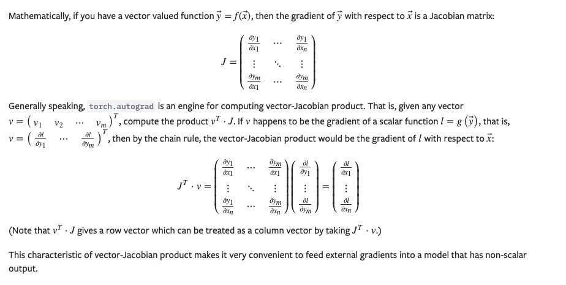
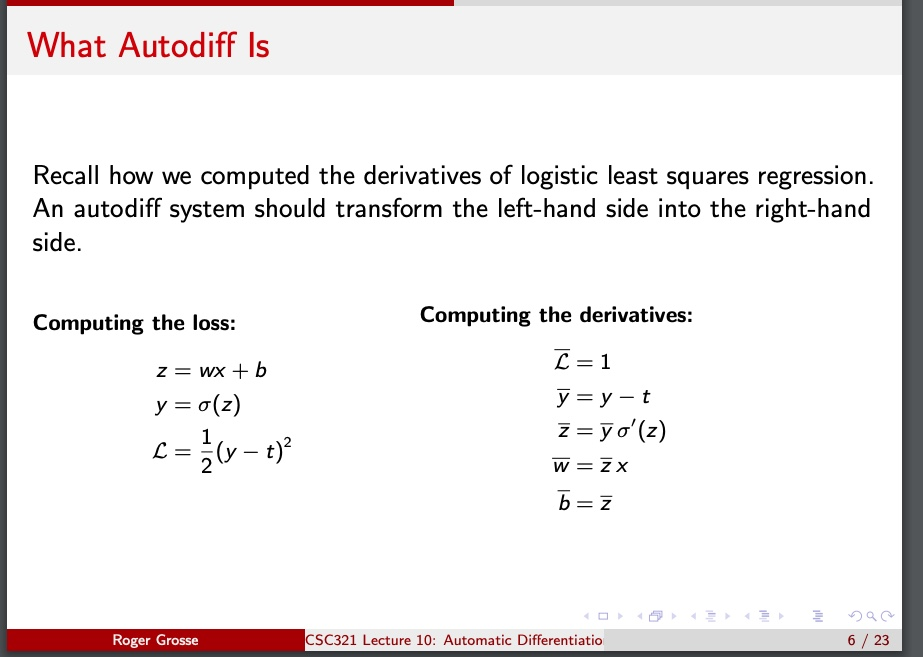

x = torch.randn(3, requires_grad=True)
y = x * 2
# while y.data.norm() < 1000:
# y = y * 2
print(y)
v = torch.tensor([0.2, 2.0, 0.0002], dtype=torch.float)
y.backward(v)
print(x.grad)
pytorch 中 向量对向量的求导是怎么算的？
向量y如何对向量x求导？
需要传入一个向量v作为参数

